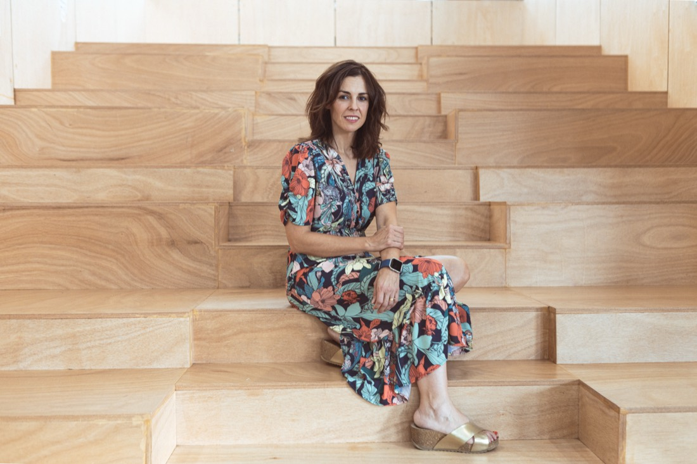

Antes de contarleal mundo quién eres,tienes que saberlo tú.
Detrás de la música que nos emociona hay personas que también necesitan ser cuidadas.
Acompaño a artistas, equipos y empresas de la industria musical en todo lo que no se ve, pero lo sostiene todo.
Personas, música y un futuro más humano. De dentro hacia afuera.
La industria musical cuida muy bien las carreras.
Casi nunca a las personas que las sostienen.
Music Mind nació de esa certeza y de una pregunta que me hice durante años: ¿cómo puede ser que
trabajando en música, que en teoría es algo tan bonito, estemos tan lejos del disfrute? Después de
25 años dentro de Universal Music Spain, sé que la presión constante, los egos y las
comparaciones no tienen por qué ser lo normal.
Music Mind es un proyecto de comunicación consciente y bienestar emocional para la
industria musical. Acompaño a artistas, equipos y empresas del sector en todo lo que no se ve pero lo
sostiene todo: la persona, sus relaciones y su mundo emocional. De dentro hacia afuera. Siempre.
01
Para artistas
Bienestar emocional, identidad y comunicación. Para crear, decidir y exponerte desde quién eres de verdad.
02
Para managers y equipos
Comunicación, gestión emocional y cultura de equipo. Porque detrás de cada artista hay personas que también necesitan ser cuidadas.
03
Para empresas
Programas de bienestar, valores e identidad corporativa para discográficas, sellos y empresas del sector.
De dentro hacia fuera
El éxito que no puedes disfrutar no es éxito. Es solo presión con buenas cifras.
Marta Marina · fundadora de Music Mind
El método · CORE
Ver los nudos y deshacerlos.
Todo artista tiene una esencia genuina, un talento real, una razón por la que hace lo que hace. Cuando esa
esencia está conectada con lo que se construye hacia afuera, la carrera fluye, conecta y dura. Cuando no,
aparecen los nudos: bloqueo creativo, relaciones tensas, decisiones desde el miedo, agotamiento.
El Método CORE toma como referencia el núcleo del cuerpo —si el centro no está bien, todo se tambalea— y
trabaja esos nudos a través de tres niveles de comunicación y cinco pilares.
Nivel 1 · el más profundo
Comunicación intrapersonal
Lo que vives y te dices a ti mismo. Tu identidad, tu propósito, tu relación con tu propio talento. El nivel más profundo y el que más influye en todo lo demás: cuando aquí hay un nudo, todo lo demás lo nota.
Nivel 2 · tu entorno
Comunicación interpersonal
Lo que ocurre entre tú y las personas de tu entorno: manager, sello, productor, equipo. Cómo te relacionas, pones límites y te comunicas con quienes tienes más cerca. Las fricciones aquí drenan energía que debería ir a la música.
Nivel 3 · el más visible
Comunicación al exterior
Lo que proyectas al mundo: medios, redes, fans. La narrativa pública, la exposición digital y la relación con la opinión externa. Cuando no nace desde un lugar sólido, se convierte en una fuente de agotamiento.
Programas
Distintas formas de entrar.
El trabajo no empieza con una estrategia. Empieza con una pregunta: ¿quién eres tú de verdad? Desde ahí, distintas formas de acompañarte a ti, a tu equipo o a tu empresa.
Para artistas
Para managers y equipos
Para empresas
Quién soy
Vengo de dentro de la industria. Y conozco su cara menos visible.
Tras 25 años en Universal Music Spain, en comunicación y promoción de artistas, conozco
de primera mano la presión, el ritmo y las decisiones que rodean a un artista. He trabajado con algunos de
los artistas más importantes del país y he visto lo que nadie cuenta: artistas que no saben gestionar el
éxito cuando llega, y equipos que funcionan desde el miedo a decepcionar en lugar de desde la confianza.
Todo cambió cuando me formé en coaching e inteligencia emocional. Mientras todos miraban datos, números y
listas, mi cabeza se iba a lo emocional: cómo estaba el artista para enfrentarse a todo lo que conlleva un
lanzamiento, y cómo podía aportar yo ahí. Music Mind nace de ese click.
Mi misión es ayudar a que la industria musical sea un lugar más feliz, más sano y más disfrutón.
Soy coach experta en Inteligencia Emocional, formo parte del claustro de varios másteres de industria
musical —SAE Institute, ISDE, CESINE y Escuela Pons— y soy creadora del Método CORE.
25años en la industria
5pilares · Método CORE
1:1cercano y confidencial
Fundadora de Music Mind · creadora del Método CORE
25 años en Universal Music Spain · Comunicación y Promoción
Formadora en SAE Institute, ISDE, CESINE y Escuela Pons
Formación en Coaching e Inteligencia Emocional · estudiando Psicología
Prensa & reseñas
En los medios, y en boca de quienes confían.
01Entrevista
«Existe la creencia de que para hacer buena música hay que estar deprimido, y no es así.»
LOS40 · Mayo 2026
Leer →

02Entrevista
«Cada vez hay más artistas que se muestran vulnerables.»
CADENA 100 · Mayo 2026
Leer →
03Prensa
«El éxito que no puedes disfrutar no es éxito. Es solo presión con buenas cifras.»
View Media Magazine · Mayo 2026
Leer →
04Reportaje
La mujer en la industria musical: más presencia, más referentes y los mismos retos
CADENA 100 · Julio 2026
Leer →
05Reseña
«Me devolvió el control de mi propia narrativa.»
— Nombre del artista · cliente de mentoring 1:1
Leer →
Newsletter
De dentro hacia afuera.
Cada mes, una mirada honesta a lo que ocurre dentro de la industria musical — y herramientas para cuidarte en ella. Sin ruido. Solo lo que tiene sentido.
Usamos solo cookies técnicas necesarias para el funcionamiento del sitio. Consulta nuestra .
Cómo trabajo.
No es intervención. Es presencia continua.
La industria sabe muy bien cómo construir una carrera hacia afuera: lanzamientos, números, imagen, estrategia, resultados. Pero deja de lado a la persona. Y cuando eso pasa, la creatividad se bloquea, las relaciones se tensan, las decisiones se toman desde el miedo y el éxito se siente vacío.
Por eso el trabajo no empieza con una estrategia. Empieza con una pregunta: ¿quién eres tú de verdad? A partir de ahí, con el Método CORE, identifico los nudos que frenan una carrera —o un equipo— y los trabajamos uno a uno, con herramientas de psicología, coaching e inteligencia emocional.
En qué se diferencia
Conozco la industria desde dentro: 25 años en Universal Music Spain.
Trabajo con la persona, no solo con la carrera. Con el artista y con quienes lo rodean.
Presencia en los momentos clave, no solo en la sesión semanal.
Confidencial y a medida. Sin miedo y sin juicio.
Para quién
Artistas, equipos y empresas que sienten que lo que construyen hacia fuera va por delante de lo que ocurre dentro — y quieren vivir la música desde un lugar más sano, más coherente y más disfrutón.
Marta Marina.
De la industria, para la industria.
He vivido la música desde dentro. Durante 25 años en Universal Music Spain, en comunicación y promoción de artistas, he visto de cerca la presión real que soporta un artista cuando todo a su alrededor acelera. Y también la de los equipos que lo rodean.
Cuando digo que trabajo en la industria musical, casi todo el mundo me dice «qué guay». Desde dentro es otra cosa: un trabajo sumamente demandante, con muchísima presión y tiempos superrápidos. Todo eso se va acumulando. Y la principal barrera para pedir ayuda sigue siendo el miedo a parecer débil.
Music Mind es mi respuesta: un espacio donde esto se pueda hablar sin miedo y sin juicio. No para frenar la carrera, sino para que se sostenga en el tiempo — y se pueda disfrutar.
Credenciales
Fundadora de Music Mind y creadora del Método CORE.
25 años en Universal Music Spain · Comunicación y Promoción.
Formadora en SAE Institute, ISDE, CESINE y Escuela Pons.
Coach experta en Inteligencia Emocional · estudiando Psicología.
En los medios
Noticias, entrevistas y casos donde he compartido mi mirada sobre la industria y el bienestar del artista.
La relación interna con lo que sabes hacer. Antes que el artista existe la persona: este pilar trabaja el núcleo, lo que te define más allá del personaje público y de la última métrica.
Es la base sobre la que se construye todo lo demás. Un talento reconocido y una identidad clara son el punto fijo desde el que se toma cualquier decisión.
Nudos habituales
No confiar en el propio talento sin una validación externa constante.
Bloqueo creativo por miedo al juicio antes incluso de crear.
Desconexión con la propia esencia: no reconocerte en lo que haces.
02
Coherencia
¿Actúas desde tus valores reales?
La alineación entre quién eres, lo que haces y cómo lo comunicas. Cuando lo que muestras no coincide con lo que eres, aparece el desgaste —y el público, antes o después, lo percibe.
Este pilar cierra las grietas entre dentro y fuera: imagen, discurso, decisiones y presencia pública hablando un mismo idioma.
Nudos habituales
Hacer música que no se siente propia, por presiones externas y comparaciones.
Sensación crónica de no ser auténtico.
Decisiones tomadas desde el miedo, no desde tus valores.
03
Equipo de trabajo
¿Tu equipo te sostiene o te drena?
Manager, sello, productor. El ecosistema emocional más cercano que tienes: el que puede sostener tu carrera o desgastarla en silencio. Que te sostenga, no que te drene.
Este pilar cuida las relaciones del proyecto: límites sanos, expectativas claras y una comunicación que no rompe el vínculo.
Nudos habituales
Una mala relación con el manager que hace perder el foco del proyecto.
Equipos que funcionan desde el miedo a decepcionar, en lugar de desde la confianza.
Fricciones que drenan la energía que debería ir a la música.
04
Aliados
¿Tus aliados suman o complican?
Colaboradores artísticos, otros artistas, medios, plataformas digitales, marcas. Las alianzas amplifican tu proyecto… o lo diluyen.
Este pilar trabaja cómo eliges tus alianzas y cómo mantienes tu voz dentro de ellas, sin perderte en lo que el otro espera.
Nudos habituales
Colaboraciones que diluyen la identidad artística.
Alianzas que se eligen por presión, no por afinidad.
Perder tu propia voz dentro de una colaboración.
05
Fans y medios
¿Cómo te muestras al mundo y desde dónde?
Tu comunidad. Narrativa propia, exposición digital y relación con la opinión externa. El nivel más visible — y el que solo funciona si los cuatro anteriores están en su sitio.
Este pilar convierte la claridad interna en una comunicación exterior coherente y una relación sana con fans, medios y redes.
Nudos habituales
Ansiedad ante la exposición pública constante.
Adicción a la validación externa: métricas, comentarios en redes, premios.
Un éxito que no se siente propio.
Diagnóstico CORE.
Escuchar, entender, mapear.
Antes de cualquier otra cosa, me siento contigo y me meto en tu universo. Dónde estás, qué está funcionando y dónde están los bloqueos: en ti, en tu equipo o en cómo te muestras al mundo.
Incluye
Sesión de 90 minutos (online o presencial).
Mapa del Método CORE (5 pilares · 3 niveles) aplicado a tu caso.
Identificación de los principales nudos.
Plan de trabajo y recomendación de siguiente paso.
Ideal si
Sientes que algo no encaja pero no sabes ponerle nombre, y quieres una mirada de alguien que conoce la industria antes de comprometerte con un proceso más largo.
Acompañamiento individual.
Conectar, herramientas, avanzar.
Sesiones semanales adaptadas a tu momento, con herramientas de psicología, coaching e inteligencia emocional. Siempre con los tres niveles de comunicación como base: lo que te dices, lo que ocurre con tu entorno y lo que proyectas al mundo.
Incluye
Sesiones individuales semanales.
Recorrido por los 5 pilares, deshaciendo nudos uno a uno.
Trabajo entre sesiones y seguimiento.
Disponibilidad para decisiones clave.
Formato
Proceso de 3 a 6 meses, al ritmo de tu carrera. Online o presencial. El alcance se ajusta tras el Diagnóstico CORE.
Hablemos.
Si algo no termina de encajar —en ti, en tu equipo o en tu proyecto— este es el primer paso.
Rellena el formulario y te responderé personalmente, sin juicio y con total confidencialidad. Primera consulta gratuita · sin compromiso. También puedes escribir directamente a hola@martamarina.com.
Aviso legal.
Información general y condiciones de uso.
En cumplimiento del artículo 10 de la Ley 34/2002, de 11 de julio, de Servicios de la Sociedad de la Información y de Comercio Electrónico (LSSI-CE), se ponen a disposición del usuario los siguientes datos identificativos del titular de este sitio web:
Titular: Marta Marina [nombre completo / razón social]
Este sitio web tiene como finalidad informar sobre los servicios de mentoring y consultoría Music Mind. El acceso y uso del sitio atribuye la condición de usuario e implica la aceptación de las presentes condiciones.
Propiedad intelectual e industrial
Todos los contenidos del sitio (textos, imágenes, logotipos, diseño y código) son titularidad de Marta Marina o de terceros que han autorizado su uso, y están protegidos por la normativa de propiedad intelectual e industrial. Queda prohibida su reproducción, distribución o transformación sin autorización expresa.
Responsabilidad
El titular no se hace responsable del uso indebido de los contenidos ni de los daños derivados del acceso al sitio. Se reserva el derecho a modificar o suspender el sitio y sus contenidos sin previo aviso.
Legislación aplicable
Las presentes condiciones se rigen por la legislación española. Para cualquier controversia, las partes se someten a los juzgados y tribunales del domicilio del usuario.
Última actualización: julio de 2026.
Política de privacidad.
Cómo tratamos tus datos personales.
De acuerdo con el Reglamento (UE) 2016/679 (RGPD) y la Ley Orgánica 3/2018, de Protección de Datos Personales y garantía de los derechos digitales (LOPDGDD), te informamos sobre el tratamiento de tus datos.
Formulario de contacto: nombre, email y mensaje, para atender tu consulta.
Suscripción a newsletter: email, para enviarte comunicaciones sobre Music Mind.
Legitimación
El tratamiento se basa en tu consentimiento, que otorgas al enviar cualquiera de los formularios. Puedes retirarlo en cualquier momento.
Conservación
Conservamos tus datos mientras dure la relación o hasta que solicites su supresión. Los datos de la newsletter, hasta que te des de baja.
Destinatarios
No cedemos tus datos a terceros salvo obligación legal. Los proveedores tecnológicos que dan soporte al sitio (correo, alojamiento) actúan como encargados del tratamiento con las debidas garantías.
Tus derechos
Puedes ejercer tus derechos de acceso, rectificación, supresión, oposición, limitación y portabilidad escribiendo a hola@martamarina.com. También puedes reclamar ante la Agencia Española de Protección de Datos (aepd.es).
Última actualización: julio de 2026.
Política de cookies.
Qué cookies usamos y para qué.
Una cookie es un pequeño archivo que se almacena en tu dispositivo al visitar una web. Esta política cumple con el artículo 22.2 de la LSSI-CE y con el RGPD.
Cookies que utilizamos
Técnicas / necesarias: imprescindibles para el funcionamiento del sitio. Guardamos tu preferencia de consentimiento de cookies en el almacenamiento local del navegador. Están exentas de consentimiento.
Analíticas y de terceros: este sitio no utiliza cookies de analítica, publicidad ni redes sociales que requieran tu consentimiento. Si en el futuro se incorporasen, se solicitaría tu autorización previa.
Gestión y desactivación
Puedes aceptar o rechazar las cookies no esenciales desde el aviso que aparece al entrar. Además, puedes configurar o eliminar las cookies desde los ajustes de tu navegador en cualquier momento.
Cambios
Podemos actualizar esta política para adaptarla a novedades legislativas o técnicas. Te recomendamos revisarla periódicamente.
Última actualización: julio de 2026.
Consultoría de proyecto.
Porque las relaciones también se pueden afinar.
Cuando aparecen nudos en el equipo, trabajo con el equipo completo: artista, manager, productor, equipo del sello. Las fricciones en este nivel drenan energía que debería ir a la música; alinearlas cambia el proyecto entero.
Incluye
Diagnóstico del proyecto y de su entorno.
Sesiones y talleres con artista y equipo.
Límites, expectativas y una comunicación que no rompe el vínculo.
Acompañamiento en momentos clave (lanzamientos, giras, crisis).
Formato
A medida, según el proyecto y el momento en el que esté.
Comunicación Consciente.
Comunicarse no es lo mismo que hablar.
Gestionar una carrera exige comunicación constante y en alta presión: con el artista, con el sello, con promotores, con el equipo. Es saber desde dónde hablo, cómo escucho de verdad, cómo doy feedback y cómo mantengo la coherencia entre lo que siento y lo que digo.
Qué se trabaja
Desde dónde comunico. ¿Desde el miedo, la urgencia, la defensa? Tomar consciencia de los propios patrones es el primer paso.
Cómo escucho. Escucha activa y empática: escuchar para entender, no para responder.
Cómo me expreso. Decir lo que necesito con claridad y respeto, sin dañar la relación.
Herramientas
Comunicación No Violenta adaptada a los retos reales de la industria musical.
Empatía: entender el punto de vista del otro sin perder el propio.
Asertividad y coherencia entre lo que siento y lo que digo.
Formato
2 horas · presencial · dinámico y participativo. Marco teórico breve y práctica con situaciones reales del día a día.
Programa de Bienestar para Equipos.
Un equipo que se cuida rinde mejor, comunica mejor y dura más.
Detrás de cada artista hay personas que también necesitan ser cuidadas. Un programa de septiembre a junio para discográficas, sellos y empresas del sector, que combina formación de equipo con espacios individuales.
Puede incluir
Talleres de comunicación consciente a lo largo del curso.
Ventana emocional: sesiones individuales y confidenciales para el equipo.
Trabajo de comunicación entre departamentos y gestión de conflictos.
Identidad y valores de equipo, con seguimiento y ajuste durante todo el programa.
Formato
Programa anual, diseñado a medida para arrancar en septiembre y llegar a junio con un equipo más sólido.
Identidad y Valores Corporativos.
Que los valores se vivan, no que se archiven.
Para empresas en momentos de cambio. Trabajo de identidad con el equipo directivo y traslado a toda la organización. Que los valores no sean un PDF archivado — que se vivan en el día a día.
Incluye
Trabajo de identidad con el equipo directivo.
Definición o revisión de valores corporativos.
Traslado de los valores a toda la organización.
Formato
Servicio adicional, a medida del momento de cambio de la empresa.
Comunicarse mejor en entornos muy exigentes.
Taller de comunicación consciente para equipos.
La industria musical exige comunicación constante en entornos de alta presión. Con artistas que tienen carácter, con managers que defienden a su artista por encima de todo, con compañeros con los que compartes presiones, frustraciones y también éxitos.
Qué se trabaja
Desde dónde comunico. ¿Desde el miedo, la urgencia, la defensa? Tomar consciencia de los propios patrones es el primer paso.
Cómo escucho. Escucha activa y empática: escuchar para entender, no para responder.
Cómo me expreso. Decir lo que necesito con claridad y respeto, sin dañar la relación.
Herramientas
Comunicación No Violenta adaptada a los retos reales de la industria musical.
Empatía: entender el punto de vista del otro sin perder el propio.
Asertividad y coherencia entre lo que siento y lo que digo.
Formato
2 horas · presencial · dinámico y participativo. También como módulo del Programa de Bienestar para Equipos.
Presencia cuando más se necesita.
Sostener, adaptar, estar.
Hay momentos en una carrera que pesan más que otros: el lanzamiento de un disco, el inicio de una gira, una entrevista importante, un photocall, una crisis. Ahí es donde más falta hace alguien que te conozca y conozca la industria.
Cuándo
Lanzamientos y cambios de dirección artística.
Inicio de gira y temporadas de mucha exposición.
Entrevistas, photocalls y citas con medios.
Momentos de crisis, cuando algo no sale como esperabas.
Formato
Complemento del acompañamiento individual o de la consultoría de proyecto. No es intervención: es presencia continua.
Ventana emocional.
A veces lo único que hace falta es poder contarlo.
En la industria musical hay momentos que pesan. Una decisión inesperada, una conversación que te ha dejado mal cuerpo, un lanzamiento que no sale como querías, una situación con un artista o un manager que se te ha ido de las manos. Si no se libera, se acumula y acaba en estrés y ansiedad.
La Ventana emocional es un espacio individual y confidencial para las personas de tu equipo, con alguien que conoce desde dentro la presión, los ritmos y las dinámicas de la industria. Que habla el mismo idioma, que no va a juzgar ni a informar a nadie.
Formato
Sesiones individuales de 45 minutos. No es terapia: es una conversación real con alguien que entiende el contexto sin que tengas que explicarlo.
01
Así es Music Mind, el proyecto que pone la salud mental en el centro de la industria musical.
LOS40 · Adriano Moreno · 21 de mayo de 2026
«He visto artistas que no saben gestionar el éxito cuando llega, y que tampoco saben gestionar que algo no salga como esperaban. Y equipos que funcionan desde el miedo a decepcionar, en lugar de desde la confianza.»
«Nos hemos acostumbrado a trabajar así y creemos que es lo normal, pero lo normal sería poder disfrutar de la música desde un lugar más honesto.»
«Cómo te hablas a ti mismo, cómo te relacionas con tu equipo y cómo te muestras al mundo están completamente conectados.»
02
La importancia de cuidar la salud mental en la industria musical.
CADENA 100 · Anita Guerra · 30 de mayo de 2026
«Si tú lo miras desde dentro, es un trabajo sumamente demandante, con muchísima presión, tiempos superrápidos, horas extra ni te cuento…»
«No solamente para artistas, ojo, que también, sino para toda la gente que hay alrededor. Hay un entramado detrás del artista que también necesita apoyo emocional.»
«Hay que mirar hacia dentro más que hacia fuera. Ese es el primer consejo que daría.»
03
Nace Music Mind, el primer proyecto en España centrado en la mentalidad de artistas y equipos.
View Media Magazine · 15 de mayo de 2026
«Las personas que trabajamos en esta industria vivimos con una presión constante, egos y comparaciones. […] ¿Cómo puede ser que trabajando en música, que en teoría es algo tan bonito, estemos tan lejos del disfrute?»
«El artista no es solo un producto. Es una persona con una identidad, una narrativa y una evolución propia. Y el éxito que no puedes disfrutar no es éxito. Es solo presión con buenas cifras.»
04
La mujer en la industria musical: más presencia, más referentes y los mismos retos por superar.
CADENA 100 · Paula Macías · 25 de julio de 2026
Tres profesionales de la música analizan el momento que vive la mujer en la industria. Marta aporta la mirada del bienestar emocional y de la presión que todavía recae sobre las artistas.
«A una mujer se le exige cantar, bailar y ofrecer un espectáculo perfecto; muchas veces a un hombre no se le mide con el mismo nivel de exigencia.»
05
«Me devolvió el control de mi propia narrativa.»
Nombre del artista · mentoring 1:1
Espacio para la reseña completa del cliente. Sustituye este texto por sus palabras reales: qué momento atravesaba, en qué le ayudó el proceso y qué cambió después.
Puedes incluir varias líneas y cerrar con la atribución (nombre, proyecto o rol).